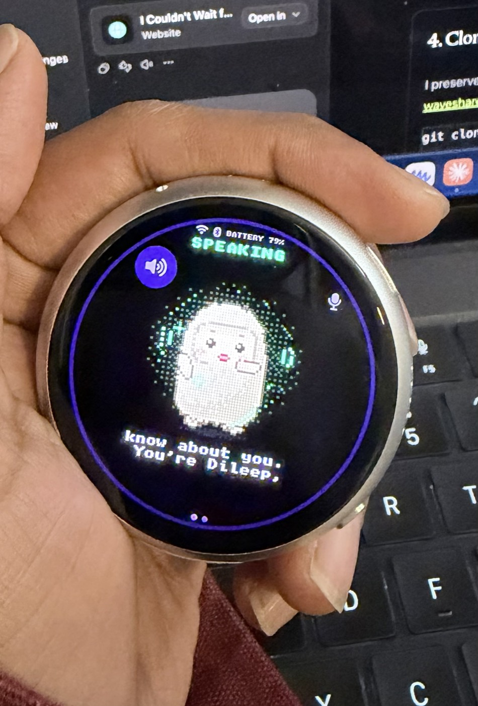
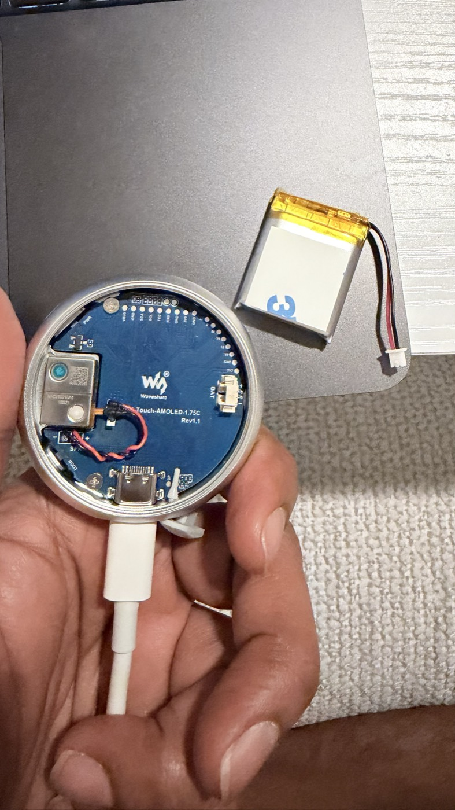
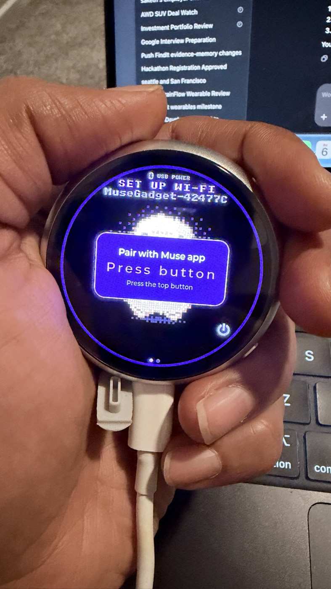

When Meta introduced Muse Charm, I was immediately excited by the idea: a small, expressive device that makes a personal AI feel present without requiring me to keep opening a phone or laptop.
But waiting for finished hardware is difficult when an idea already feels buildable.
I had a Waveshare ESP32-S3-Touch-AMOLED-1.75C with a round screen, microphone, speaker, touch interface, Wi-Fi and room for a small battery. With the official Muse Gadget SDK, it looked like the perfect platform for learning what a dedicated Muse device could feel like before Charm reaches my hands.
I named it Arc.

Arc is not a homemade Muse Charm and I do not want to present it as one. It has different hardware and does not reproduce every announced Charm feature. What it gives me is the part I most wanted to experience: a compact Muse-powered companion with an animated display, live spoken conversation and enough openness to keep experimenting.
The exciting part was not that I could avoid waiting. It was that waiting became an opportunity to understand the system by building one.
What works now
The finished setup connects to Wi-Fi, pairs with my Muse account and supports two different conversation modes:
- Quick click: start a live, hands-free conversation and hear Muse's spoken reply.
- Click again: end the live call.
- Press and hold: send a voice note and read the text reply on the display.
The device shows Muse's animated avatar, captions and connection state on its 466 × 466 AMOLED display. Brightness, screen sleep, microphone gain and speaker volume are adjustable. Once configured, the Muse build works over Wi-Fi without using my MacBook as an AI bridge.
That final interaction looks simple. Getting there required much more than copying firmware onto a board.
The principle that guided the build: preserve a way back
Arc already had working Xiaozhi firmware. Replacing it meant changing something valuable, not preparing an empty development board. Before writing anything, I wanted three recovery layers:
- A complete backup of the existing 32 MB flash.
- A separately verified official Waveshare factory image.
- A reproducible Muse build with pinned source and toolchain versions.
Step by step: from Xiaozhi to Arc
1. Confirm the exact board and USB connection
I connected the board directly to my Mac with a USB-C data cable and confirmed the printed model: Touch-AMOLED-1.75C Rev1.1.
ls /dev/cu.usb*
My device appeared as /dev/cu.usbmodem101, but port names can change. A matching USB port proves connectivity, not the board model.
2. Read the hardware identity before writing
I used an isolated Python environment and esptool for read-only checks:
brew install python@3.13 /opt/homebrew/bin/python3.13 -m venv .local/esptool-env .local/esptool-env/bin/python -m pip install esptool==5.6.0 export ARC_PORT=/dev/cu.usbmodem101 .local/esptool-env/bin/python -m esptool \ --chip esp32s3 --port "$ARC_PORT" flash-id .local/esptool-env/bin/python -m esptool \ --chip esp32s3 --port "$ARC_PORT" get-security-info
My unit reported an ESP32-S3 with 32 MB flash and 8 MB PSRAM. Secure Boot and flash encryption were disabled. Other units should be checked rather than assumed to match.
3. Capture and verify a complete backup
A 16 MB backup would have been incomplete for my 32 MB board. I saved the entire flash, generated a checksum and compared the file back against the device:
mkdir -p .local/recovery chmod 700 .local .local/recovery umask 077 .local/esptool-env/bin/python -m esptool \ --chip esp32s3 --port "$ARC_PORT" --baud 460800 \ read-flash 0x0 0x2000000 \ .local/recovery/arc-xiaozhi-full-32mb.bin shasum -a 256 .local/recovery/arc-xiaozhi-full-32mb.bin .local/esptool-env/bin/python -m esptool \ --chip esp32s3 --port "$ARC_PORT" \ verify-flash 0x0 .local/recovery/arc-xiaozhi-full-32mb.bin
The backup can contain credentials and device configuration, so it stays private and outside Git.

4. Clone the reproducible Arc project
I preserved the working instructions, source pins, checks and troubleshooting history in the public waveshare-arc-muse repository:
git clone https://github.com/phanidileep4/waveshare-arc-muse.git cd waveshare-arc-muse export PATH="$(brew --prefix python@3.13)/libexec/bin:$PATH" python3 scripts/bootstrap.py
The bootstrap script downloads the pinned Muse and ESP-IDF sources into an ignored local directory. It does not flash the device.
5. Keep the Muse token private and build
The Muse SDK token is stored in a private local file, never in the repository or a shell command:
export ARC_SDK_TOKEN_FILE=/absolute/path/to/private-token-file python3 scripts/build.py
The generated firmware contains the token, so compiled binaries also remain private. The public repository contains only safe configuration overlays, validation evidence and scripts.
6. Verify the exact configuration
The successful build uses the ESP32-S3 target, exact Waveshare 1.75C board overlay, 32 MB flash and octal PSRAM. Two options were decisive for the final experience:
CONFIG_MUSE_REALTIME_VOICE=y CONFIG_MUSE_STATIC_BUFFERS_IN_PSRAM=y
The first enables live spoken calls. The second moves large static avatar and audio buffers into PSRAM. Without it, Arc could boot and appear ready but lacked a sufficiently large internal-memory block for the Muse connection task.
7. Treat the first migration differently from an upgrade
Moving from Xiaozhi to Muse changes the partition layout. That first migration is not the same as updating an already paired Muse device.
The repository's flash helper defaults to a plan and does not write anything:
python3 scripts/flash.py --port "$ARC_PORT"
That helper is only for Muse-to-Muse upgrades and preserves pairing data. For a first Xiaozhi-to-Muse migration, follow the separate, explicitly marked instructions in the repository's step-by-step guide after verifying the complete backup. I intentionally keep the destructive write details in that maintained guide rather than encouraging readers to paste commands from an article without context.
8. Pair the device and finish Wi-Fi setup
Arc uses 2.4 GHz Wi-Fi. In the Muse app I enabled developer mode, added the gadget shown on Arc's screen, confirmed pairing with the physical top button, selected the network and entered its password.
One lesson was easy to miss: getting an IP address on Arc and finishing Muse account pairing are separate milestones. I eventually had Arc connected directly to Wi-Fi while the app still asked for the network password. Completing the app flow paired Arc to my Muse account.

9. Use the correct button gesture for spoken replies
A long press sends a voice note, whose reply is text. A quick click and release starts the live call that produces spoken audio. If the display is asleep, the first click may only wake it; click again once it is awake.
My final controlled test returned HTTP 200, played 583 audio frames with zero dropped or bad frames, and ended cleanly. More importantly, I heard Muse respond through Arc's speaker.
The failed attempts taught me how the system actually works
The most useful findings came from symptoms that initially pointed in the wrong direction:
- Wi-Fi authentication timeouts did not automatically mean a wrong password. Band settings, connection state and account pairing had to be separated.
- Hearing tones did not prove replies contained speech. The default voice-note mode intentionally produces text rather than spoken answers.
- “Can't connect” was not necessarily a network problem. In the first live build, internal-memory pressure prevented an 8 KiB Muse task from starting.
- A successful build was not the acceptance test. The real finish line was speaking, receiving a response and hearing valid audio on the physical device.
The complete sequence—including corrections, unresolved uncertainties and the evidence behind each conclusion—is preserved in the repository's troubleshooting history.
Why this excites me before Muse Charm arrives
There is a special satisfaction in using a polished device. There is a different satisfaction in arriving at the experience by understanding its layers: USB, flash geometry, recovery, firmware, memory placement, Wi-Fi, account pairing, audio transport and physical controls.
Arc lets me explore the behavior of a dedicated AI companion now. I can learn which interactions feel natural, when a screen adds value, how often I prefer voice notes versus live calls, how battery and connectivity shape portability, and what I may eventually want from custom tools or an OpenAI integration.
I want to experience Muse on Arc for a short period, but I already know this is not the endpoint. I would like to overwrite it soon with my own OpenAI-powered build—one where I control the voice experience, personality, memory and tools instead of treating the hardware as a fixed appliance.
That OpenAI integration has not been implemented yet. When it is ready, the first milestone will be deliberately simple and complete: speak to Arc, receive an OpenAI response and hear it through Arc's speaker. Only after that works end to end will I add custom memory, tools or on-demand phone-camera vision. The verified Muse firmware and Xiaozhi backup will remain recovery paths while I experiment.
Sometimes excitement about an upcoming product is not only a reason to wait for it. It is a reason to start learning.
Build it carefully, then make it yours
This is a community experiment, not an official Waveshare or Muse release. Anyone trying it should begin with the exact hardware identity, a verified full backup and a private recovery archive. Never commit SDK tokens, Wi-Fi credentials, flash dumps or token-bearing firmware.
If you want to reproduce the project or improve the documentation, visit github.com/phanidileep4/waveshare-arc-muse. The repository includes the complete guide, daily controls, recovery notes, build validation, hardware findings and roadmap.
Arc began as a way to satisfy my curiosity before Muse Charm becomes available. It has already become something better: a working device, a recovery-safe experiment and a foundation I understand well enough to overwrite, rebuild and keep extending—next with OpenAI.
Sources and project documentation: Meta: Muse Charm · Official Muse Gadget SDK · Waveshare 1.75C documentation · Waveshare Arc Muse repository